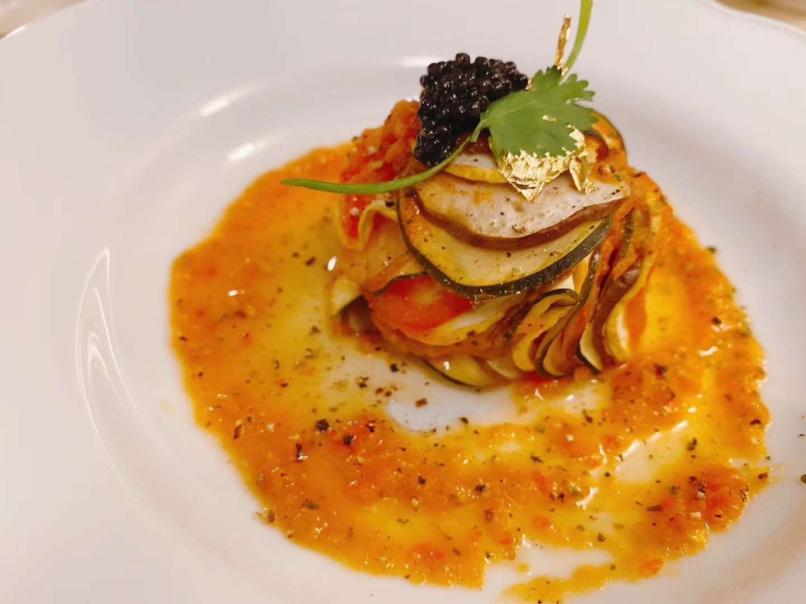

Ratatouille (Confit Byaldi) with Caviar
Filet Mignon with Carrot Foam and Califlower Purée
Howl's Moving Castle Themed Breakfast
Croissant with Light Honey Glaze
Dark Rye Bread
Carnival Squash with Green Pea Purée and Caviar
Purple Cauliflower Lobster Bisque
Black and White Sesame Shokupan
Fruit Tarts with Pitaya Creamcheese Custard Cream
Chocolate Cake with Kiwi Filling
Proofed Focaccia